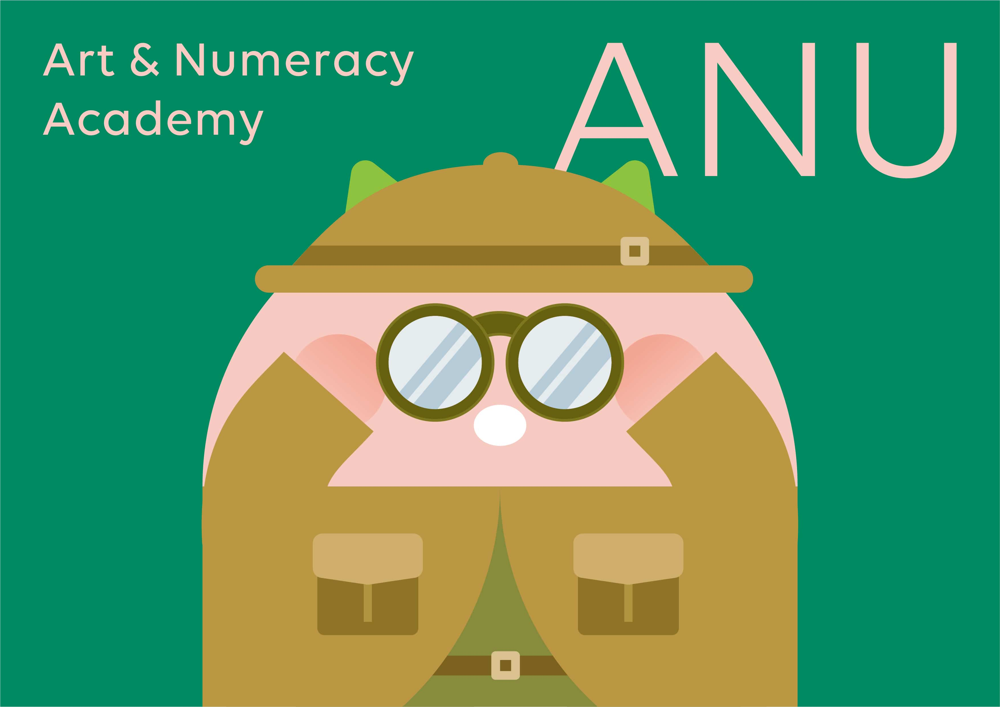
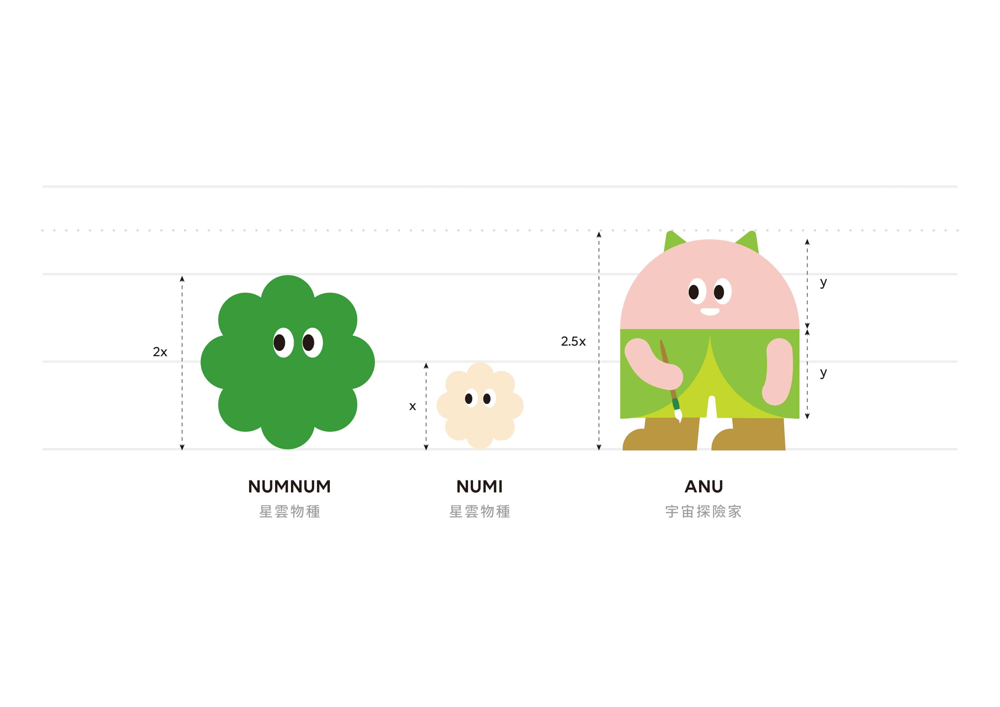
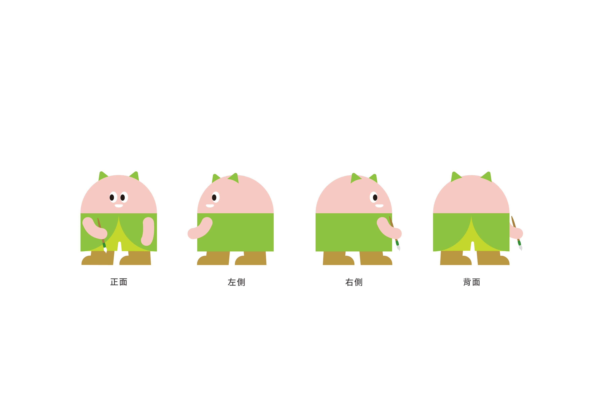
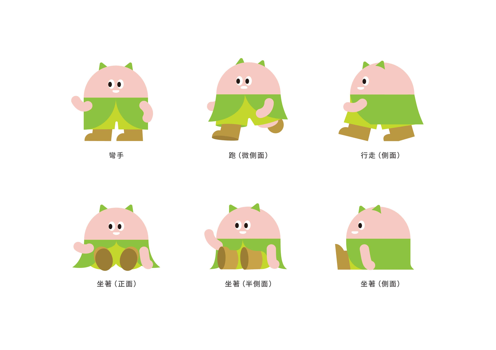
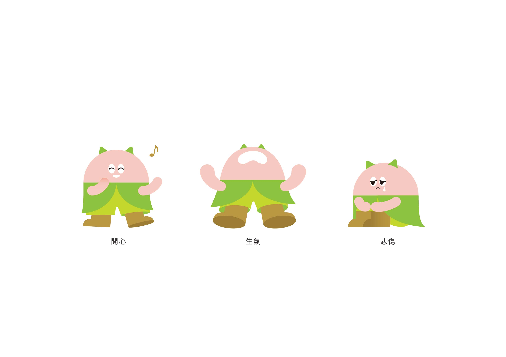

ANU 角色設計
Firm: Art & Numeracy Academy
Design: Tsaiyuyu
Release: 2024.
宇宙探險家ANU是數感實驗室子品牌「美數學院」的吉祥物。角色設計延續了數感實驗室既有的角色——NumNum與Numi幾何、圓潤、簡約的風格，造型與色彩上也結合了美數學院的品牌logo。我特別設計多組肢體動作與情境姿勢，讓角色呈現更鮮明的個性與情感表達，適用於教學與行銷情境中。



